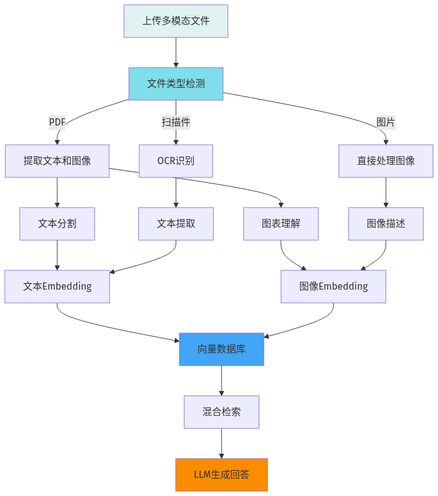

本地大模型知识库系列第11篇 | 多模态
上一篇我们学习了性能优化，现在让知识库支持图文混合内容。很多文档不仅包含文字，还包含图表、图片等，我们需要让系统能够理解和处理这些视觉信息。

01 安装多模态依赖
# 安装多模态处理库
pip install pillow pytesseract transformers
# 安装OCR工具（用于图片文字识别）
# macOS
brew install tesseract
# Ubuntu
sudo apt-get install tesseract-ocr02 图片文字识别
使用OCR技术提取图片中的文字信息：
import pytesseract
from PIL import Image
def extract_text_from_image(image_path):
image = Image.open(image_path)
custom_config = r'--oem 3 --psm 6'
text = pytesseract.image_to_string(
image,
lang='chi_sim+eng',
config=custom_config
)
return text
# 使用示例
image_text = extract_text_from_image("document.png")
print("图片中的文字:")
print(image_text)03 图像理解与描述
使用视觉语言模型（VLM）理解和描述图片内容：
import ollama
def describe_image(image_path, prompt="请描述这张图片的内容"):
with open(image_path, 'rb') as f:
image_data = f.read()
response = ollama.chat(
model="llava",
messages=[{
"role": "user",
"content": prompt,
"images": [image_data]
}]
)
return response["message"]["content"]
# 使用示例
description = describe_image("chart.png")
print("图片描述:")
print(description)04 图文混合索引
将图片描述和文字一起存入向量数据库：
from langchain.schema import Document
def process_multimodal_document(text_content, image_paths):
documents = []
documents.append(Document(
page_content=text_content,
metadata={"type": "text"}
))
for img_path in image_paths:
ocr_text = extract_text_from_image(img_path)
img_description = describe_image(img_path)
combined_text = f"图片内容描述: {img_description}\n图片中的文字: {ocr_text}"
documents.append(Document(
page_content=combined_text,
metadata={"type": "image", "source": img_path}
))
return documents
# 使用示例
text = "这是一份产品说明书，包含多个图表和图片。"
images = ["chart1.png", "screenshot.png"]
docs = process_multimodal_document(text, images)⚠️ 常见问题
1. OCR识别不准确：尝试调整图片分辨率和对比度
2. 图像模型加载失败：检查模型是否已下载
3. 处理速度慢：图像理解比纯文本慢，需要耐心等待
4. 内存占用高：处理大图片时注意内存管理
—— 未完待续 ——
本地大模型知识库系列第11篇
下一篇：生产部署——从开发到上线